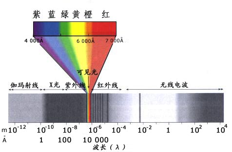
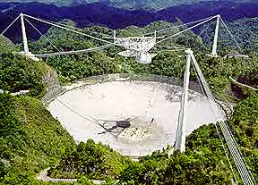

射电天文学
1860年，苏格兰物理学家麦克斯韦提出一个理论，预言整个辐射家族都与电磁现象（即电磁辐射）有联系，而一般可见光只是这个家族中的一小部分而已。25年以后，即在麦克斯韦因患癌症过早去世7年后，才找到了证实他的预言的第一个确实的证据。1887年，德国物理学家H.R.赫兹从感应线圈的火花中制造振荡电流，结果产生出波长极长的辐射，比一般红外辐射的波长长得多。H.R.赫兹探测到了这些辐射。这些辐射后来称做无线电波或射电波。 http://st.ustc.edu.cn/lab/tianti/books/A_Cosmos/EMSpectrum.jpg http://st.ustc.edu.cn/lab/tianti/books/A_Cosmos/Arecibo305.jpg
波长可以用微米（1/1000000米）来量度； 可见光的波长从0.39微米（极紫）到0.78微米（极红）。接下去是近红外辐射（0.78～3微米），再就是中红外辐射（3～30微米），然后是远红外辐射（30～1000微米）。从此开始便是射电波：所谓的微波从1000～160000微米，长波射电波长高达几十亿微米。
辐射的特性不仅可以用波长来表示，也可以用频率来表示。频率就是每秒钟产生的辐射的波数。可见光和红外辐射频率的数值太大，因此在这两种情况下通常不使用频率来表示。但是，对射电波来说，频率降低到比较低的数字，因而得到广泛地应用、每秒钟1000个波叫做1千周；每秒钟1000000个波叫做1兆周。 微波的范围从300000兆周到1000兆周。一般电台使用的射电波波长都很长，都低到千周的范围。
在赫兹发现射电波后的10年期间，光谱的另一端也有了同样的扩展。1895年，德国物理学家伦琴意外地发现了一种神秘的辐射，他称之为Ｘ射线，结果证明，Ｘ射线的波长比紫外辐射的波长短。后来卢瑟福证明，与放射性有关的γ射线的波长比Ｘ射线的还要短。
目前光谱中的短波部分大致划分如下：波长从0.39～0.17微米属于近紫外辐射，从0.17～0.01微米属于远紫外辐射，从0.01～0.00001微米属于Ｘ射线， γ射线的范围则是从这个数值一直到小于十亿分之一微米。

电磁波谱
于是，牛顿最初的光谱得到极大的扩展。如果我们把波长每增加一倍看作是相当于1个8度音程的话（如同声音那样），那么我们所研究的全部电磁波谱大约等于60个8度音程： 可见光在靠近光谱的中心部分，仅占1个8度音程的范围。
有了比较宽的光谱，我们对恒星的认识当然会更加全面。例如，我们知道，太阳光中包含着大量紫外辐射和红外辐射，这些辐射大部分被我们的大气吸收了；但是1931年非常意外地发现了一个探索宇宙的射电窗口。贝尔电话实验室的一位年轻的无线电工程师央斯基，在研究经常伴随着无线电接收而产生的静电时，偶然发现了一种非常稳定的噪声，这种噪声不可能来自任何通常的噪声源。他最后断定，这种静电是由来自外层空间的射电波引起的。
最初，来自空间的射电信号似乎在太阳方向上最强，但一天天过去后，接收到的最强信号慢慢地从太阳方向移开，并且在天空中环行一圈。到1933年，央斯基断定，这些射电波来自银河，特别是来自靠近银河系中心的人马座方向。
于是射电天文学诞生了。但因为它还有严重的缺点，所以并没有立即受到天文学家的欢迎。射电天文学得到的并不是整齐的图形，而只是在图上画出一些扭动的曲线，很不容易解释其中的含义。更重要的是，射电波的波太长，以至于无法分辨出像恒星那样小的射电源。来自空间的射电信号，波长大约是光波波长的几十万倍甚至几百万倍；因此，任何普通的无线电接收机最多只能测出这些射电波发射的大致方向。射电望远镜必须有一个比光学望远镜的镜面大100万倍的抛物面天线， 才能产生像光学望远镜那样清晰的天空图像。 一架5.08米（200英寸）口径的望远镜需要匹配的抛物面天线的直径为5040公里，大约是美国面积的两倍，这显然是不可能办到的。
这些困难影响了人们对这项新发现的重要性的认识。但是一位名叫雷伯的年轻的无线电业余爱好者，出于个人的好奇心，继续对射电波进行研究。1937年，雷伯花费了许多时间和金钱，在后院中建造了一架小型射电望远镜，并配有一具直径约为9米（30英尺）的抛物面天线，接收和集中射电波。1938年初，除了人马座外，他又发现了一些射电源，例如，天鹅座中有一个，仙后座中也有一个，（最初，不管这种源是不是恒星，均称射电星，但现在一般都叫做射电源。）
在第二次世界大战期间，英国的科学家在研制雷达的过程中发现，太阳发射的微波范围内的信号对雷达有干扰。这一发现激起了他们对射电天文学的兴趣。第二次世界大战结束后，英国继续对太阳射电频率的研究工作。1950年，他们发现，太阳的射电信号大多与太阳黑子有关，（央斯基是在太阳黑子活动极小期进行实验的，所以他探测到银河系的辐射，却没有探测到太阳的辐射）。
此外，由于雷达技术和射电天文学使用的波长相同，所以到第二次世界大战结束时，天文学家便有了适合于处理微波的大型阵列设备。这些设备很快就得到改进，人们对射电天文学的兴趣也大为提高。
为了更清晰地接收和给射电源准确定位，英国首先建造了大型天线。在英国的焦德雷尔班克，洛维耳监造了直径约为76米（250英尺）的抛物面天线，从而有了第一架真正的大型射电望远
后来终于发现了清晰接收的方法，要获得高分辨力，并不需要建造一架大得无法制作的射电望远镜，而只要在一个地方建造一架大射电望远镜，在远距离的地方再建造一架就行了。如果用超精确的原子钟校正两个抛物面天线的时间，并通过精密电脑的处理使它们一致运行的话，则两个抛物面天线所产生的效果与一个直径等于两者直径之和（即两者分离的距离）的大型抛物面天线相同。抛物面天线的这种组合叫做长基线射电望远镜或甚长基。澳大利亚天文学家在他们那宽广而比较空旷的土线射电望远镜地上安装了这种射电望远镜。现在，美国加利福尼亚州与澳大利亚合作建立的抛物面天线， 产生的基线大约是10600公里（6000英里）。

Arecibo 305米射电望远镜
因此，射电望远镜产生的图像同敏锐的光学望远镜一样清晰。实际上，射电望远镜比光学望远镜分辨得更仔细。诚然，这种甚长基线射电望远镜在地面上可以无限地延长，但是天文学家正在梦想，使射电望远镜在空间相互配合，并同地球上的抛物面天线配合，以形成更长的基线。
然而，早在射电望远镜发展到目前的水平之前，就有了许多重大发现。1947年，澳大利亚天文学家博尔顿测定了天空中第三个最强的射电源的方位，证实就是蟹状星云。在天空各处被探测到的射电源中，这是第一个被确定的实际可见的天体。这样强的辐射似乎不可能是由一颗恒星产生的，因为其他恒星并不产生这种辐射。这个射电源似乎比较可能是蟹状星云中膨胀着的气体云。
这项发现更加证明，宇宙射电信号主要是由湍动气体产生的。太阳外层大气中的湍动气体发出射电波，所以所谓的射电太阳比可见太阳要大得多。后来发现，具有湍动大气的木星、土星和金星也是射电源。
射电天文学的开创者央斯基，在世时基本上没有得到人们的赏识，而在1950年，正当射电天文学开始大踏步前进的时候，他去世了，享年44岁。后来人们为了纪念他，便用央斯基作为测量射电发射的强度单位。